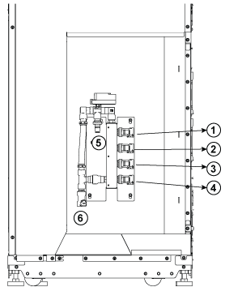
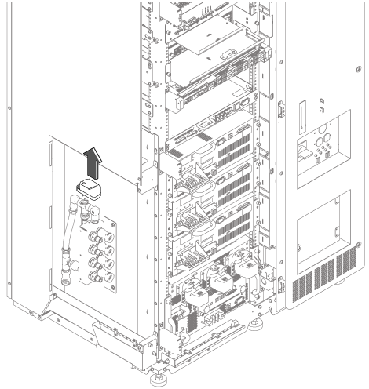
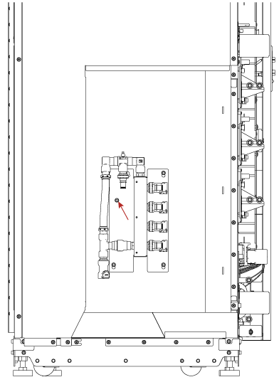
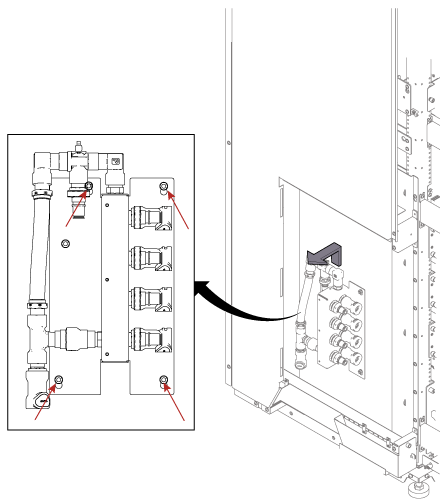

- Object ID: 00000018WIA308A0190GYZ
- Topic ID: id_2038816 Version: 1.1
- Date: May 20, 2022, 6:19:46 AM
Replacing the water manifold
About this task
Procedure
- Removing the system cabinet front cover and water manifold access cover. Refer to SC Cover Removal.
- Disconnect the all IN and OUT quick couplers of water manifold.
Figure 1. Water Manifold Socket Order 
Item Description 1 XFA- X 2 XFA- Y 3 XFA- Z 4 XFD- PS 5 Water In 6 Water Out Note Be caution of water drop on the leak sensor while removing the quick couplers. - Cut the tie wraps securing the actuator to the water manifold and pull out the actuator.
Figure 2. Removing the actuator 
- Remove the screw securing the water manifold.
Figure 3. Removing the screw 
- Loosen the screws then remove the water manifold.
Figure 4. Loosen the screws 
- Install the new water manifold in the reverse order of removal.
- Install the actuator back to the water manifold.
- Recover the system cabinet covers.